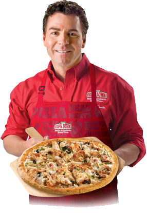

Wie zijn wij

Sander .B
Eigenaar
Peter .H
Manager
Irma .S
Chefkok


Eigenaar
Manager
Chefkok
De oorsprong van de pizza ligt in het Midelandse Zeegebied. In veel landen rond de Middelandse Zee worden al duizenden jaren ronde broden gebakken, die als borden dienden. Volgens de overlevering moest de Trojaanse held Aeneas een stad (Lavinium) stichten op de plek waar hij van honger zelfs de leeggegeten borden [dus: broodborden] op gaat eten,' - versregel 125 boek VII uit de Aeneis. Ronde Turkse broden kunnen vandaag de dag nog dienstdoen als provisorische pizzabodems. Ook de vorm van matsed is rond of ovaal.
we zitten gevestigd in Antwerpen.
4596 HF, Antwerpen
Kerkstraat 44